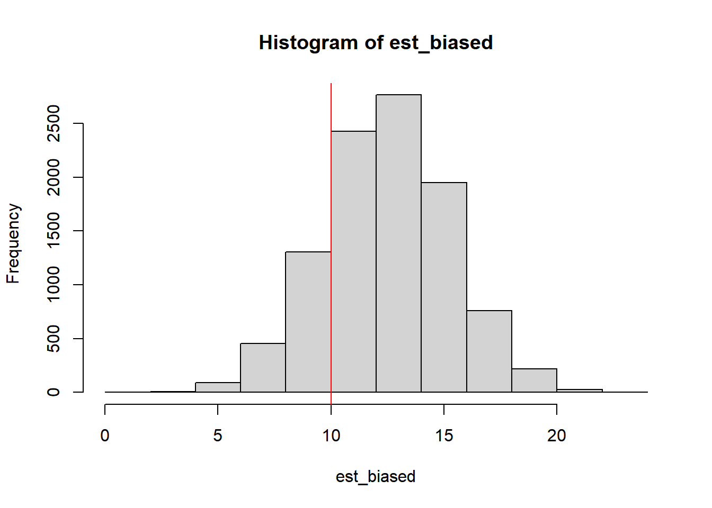

Nesse exercício vamos demonstrar que esse é um estimador enviesado para \(\mu_{y}\) .
# primeiro definimos a funçãoY_tilde <-function(x){sum(x)/(length(x)-1)}# em seguida computamos 10.000 estimações aleatórias e salvamos elas em est_biasedset.seed(123)est_biased <-replicate(n =10000, expr =Y_tilde(rnorm(5, 10, 5)))# plotamos um histograma de est_biasedhist(est_biased)#quando colocamos uma linha vermelha no meio do grafico #podemos ver que há uma tendencia, #logo visualmente confirmamos que o estimador é enviesadoabline(v =10, col ="red")

###Exercício 2
Em seguida, vamos pegar essa mesma equação, mas dessa vez faremos 1000 observações ao invez de 5
Para outro exercicio vamos pegar o pacote com os dados de Boston e fazer a mesma regressão do exercicio do outro post
mod <-lm(medv ~ lstat + crim + age, data = Boston)
no final do outro post descobrimos que não é muito significativo comparar \(R^2\) dos modelos de regressão com um número de regressores diferentes.
Para isso é utilizado o \(\overline{R^2}\) (R-Quadrado ajustado)
summary(mod)$r.squared
[1] 0.5559429
summary(mod)$adj.r.squared
[1] 0.5532892
###Exercício 5
Em um proximo exercício usaremos um pacote “ReadXL” para ler um arquivo .xlsx
cps <-read_excel("cps_ch3.xlsx")#fazendo um glimpse() podemos descobrir mais sobre os dados.#sabendo que a coluna ahe08 é "average hourly earnings" em preços de 2008glimpse(cps)
Podemos afirmar que os salário/hora dos trabalhadores, em média, é menor que 23$/h.
Em termos estatísticos: como $\mu$ < 23,5 não és possivel rejeitar H0
t.test(cps$ahe08, alternative ="greater", mu =23)
One Sample t-test
data: cps$ahe08
t = -7.1505, df = 15392, p-value = 1
alternative hypothesis: true mean is greater than 23
95 percent confidence interval:
22.2618 Inf
sample estimates:
mean of x
22.39986
a partir dai podemos ver que o valor t é igual a -7,15 e o p-valor é igual a 1. Então já que o valor ‘t’ é bem baixo, não há chances de rejeitar a hipotese nula. Também como o p-valor é igual a 1 não há nenhuma chance de rejeitar H0.
###Exercício 7
Considerando a biblioteca library(ismev) e seus conjuntos de dados: data(portpirie) e data(fremantle).
Vamos testar para ver se há uma diferença significativa entre o nível do mar anual máximo entre as duas regiões (\(\alpha\) = 0,05)
Welch Two Sample t-test
data: portpirie and fremantle
t = 3.2036, df = 244.58, p-value = 0.001537
alternative hypothesis: true difference in means is not equal to 0
95 percent confidence interval:
127.3284 533.8424
sample estimates:
mean of x mean of y
979.4903 648.9049
Temos: t = 3.20 ; p-valor = 0,0015
Temos um p-valor menor que \(\alpha\). Logo podemos rejeitar a hipotese nula de que os níveis do mar são iguais em ambas localidades.